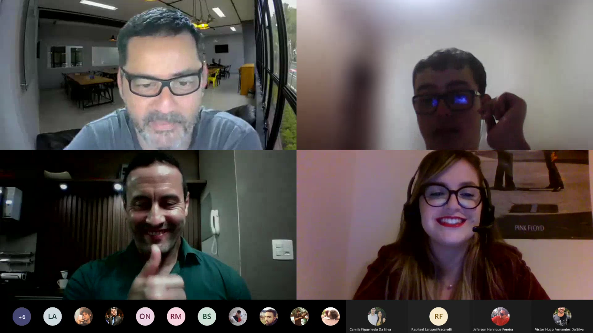
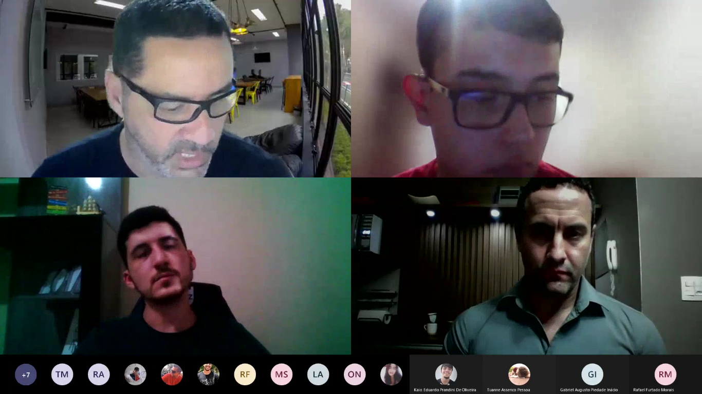
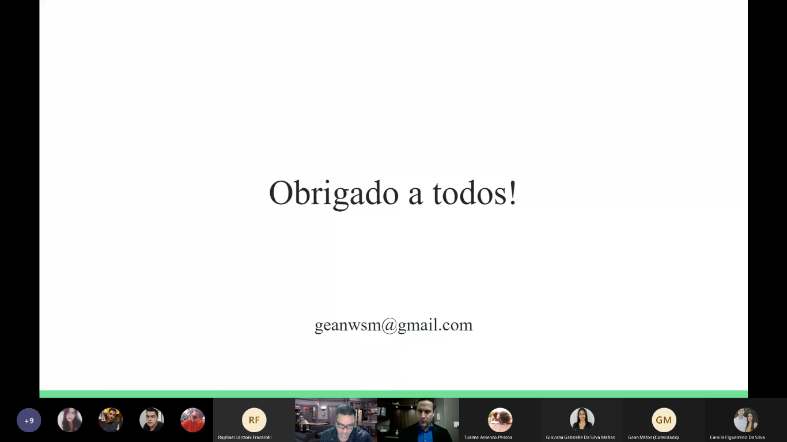
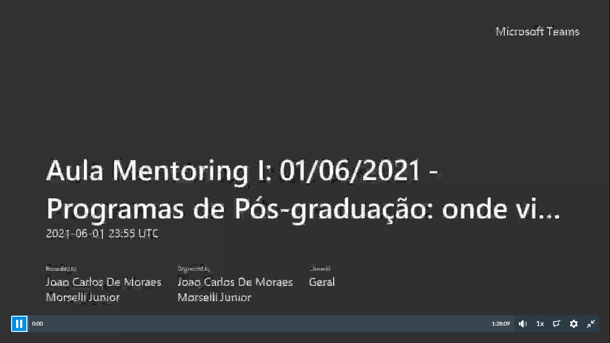

Entrar na faculdade tem consigo responsabilidades que até então não havia demonstrado tão visíveis durante a carreira escolar.
Muitos vêm com a ideia (deixada por seus familiares) de que será super difícil. A disciplina de mentoring, desenvolvida para o primeiro
período tem o objetivo de auxiliar o aluno, não só no campo acadêmico, mas também na futura carreira profissional, desenvolvendo a ética,
o planejamento de estudo, dentre outros vários ensinamentos. O professor João, juntamente com o professor João Benedito, tiram essa impressão
que é passada para várias pessoas, te mostrando com conversas e projetos que a faculdade não é um bicho de sete cabeças e sim uma ótima oportunidade de
desenvolvimento pessoal e mental.
Projetos
Conversas com egressos da PUC Minas:
Mostrando toda a carreira acadêmica e as oportunidades que a area oferece, falando um pouco de suas experiências.
Conversas sobre empresas com participações especiais:
Este projeto faz com que os alunos tenham, de forma descontaída e por meio de conversa, um pouco do conhecimento de empresas e os projetos desenvolvidos nelas.
Desenvolvimento ético:
Momento da filosofia: este minuto da filosofia, tão rápido, porém tão importante na aula, trazendo reflexões para o desenvolvimento ético e humanista.
Auxiliação acadêmica:
Durante a aula, é passado também maneiras corretas de estudar, de escrever projetos sem o famigerado plágio, dicas valiosas para o melhor desenvolvimento da carreira acadêmica.
Alguns dos projetos em aula...

Aula: Conversa com a Egressa Brenda Paschoal
Nesta aula, tivemos a oportunidade de explorar junto com a história de Brenda Paschoal
uma das varias oportunidades que a computação proporciona. Ela pôde nos falar de sua experiencia fora do Brasil e todo seu percurso para alcançar o que
queria.

Aula: Conversa com o Egresso Antônio Vianna
Nesta aula, tivemos a oportunidade de explorar junto com a história de Antônio Vianna,
outra das varias oportunidades que a computação proporciona. Mostrando o quão grande e diverso é o mercado de trabalho neste meio.
Você sabe estudar?
Nesta aula, os professores disponibilizaram o pdf deste livro incrível, além de uma discussão sobre
distrações na hora do estudo, maneiras corretas que poderia melhorar o desempenho, estudando menos e aprendendo muito mais.

Aula: Conversa com o Egresso Gean Matos
Nesta aula o egresso Gean Matos pôde nos contar sua experiência no mundo da computação,
desde a faze acadêmica até o mercado de trabalho.

Programas Pós-Graduação
Esta aula teve o objetivo de apresentar como funcionam os programas de pós-graduação.